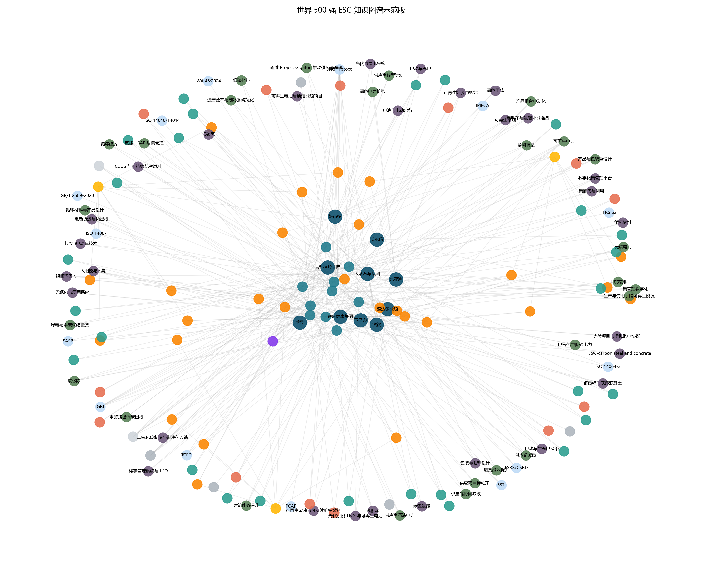
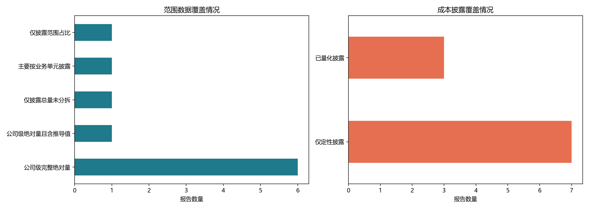
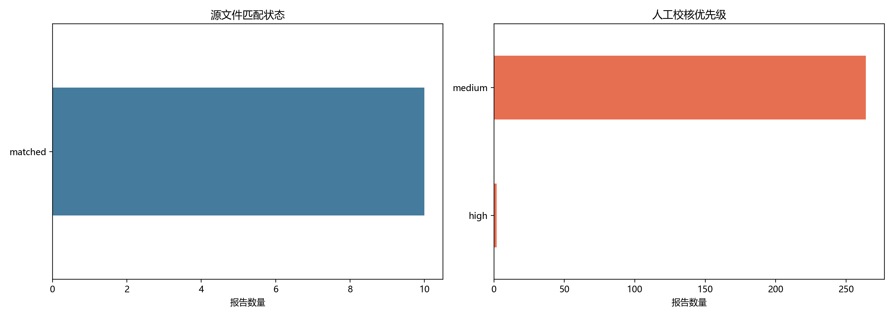

ESG Knowledge Graph
世界500强 ESG 知识图谱
我基于世界500强企业公开报告，构建了一个聚焦 ESG、碳排放与减碳路径的知识图谱示范站点。
在这里，我希望用更直观的方式呈现企业 ESG 披露、排放结构、技术路线与减碳成效之间的关系。
当前页面展示的是一个 10 份报告的示范样本，用于说明这套知识图谱的结构、维度和可视化表达方式。
核心指标
这些指标对应当前示范样本的处理规模与图谱规模。
已处理报告
10已匹配报告
10OCR 页数
254图谱节点
167图谱关系
349我重点关注的内容
我重点追踪企业报告中与排放、技术、路径、成本和减排效果相关的核心信息。
企业 ESG 报告与披露标准
碳排放总量及 Scope 1、2、3 结构
减碳路径与关键技术类型
减排效果、投资与成本信息
不同企业之间的横向比较关系
样本披露特征
下面展示的是当前样本在 Scope 披露完整性和成本披露上的整体特征。
可直接识别 Scope 1/2/3 的企业
6披露量化成本或投资的企业
3图示结果
以下内容按正式汇报中的图示章节方式编排，围绕图1至图5依次呈现知识图谱结构、排放特征、技术路径、披露覆盖与样本处理情况。
图1
知识图谱总览
呈现企业、报告、标准、排放、目标、技术与减碳路径之间的结构关系。
结果解读: 技术类型、目标与排放记录构成当前样本图谱中的高频核心实体，说明这套图谱已经能够把企业披露稳定转化为可比较的结构化事实。

图1对应结构化结果
| 实体类型 | 节点规模 |
|---|---|
| 企业 | 10 |
| 报告 | 10 |
| 标准 | 14 |
| 排放记录 | 27 |
| 目标 | 27 |
| 减碳路径 | 26 |
| 技术类型 | 29 |
| 减排成效/成本 | 13 |
图2
Scope 排放分布
展示不同企业在 Scope 1、2、3 上的排放结构差异。
结果解读: 样本企业的排放结构普遍呈现 Scope 3 占主导的特征，这意味着价值链排放是横向比较和减碳路径识别中的关键观察维度。

图2对应排放事实节选
| 企业主体 | 核算年度 | 排放范围 | 排放量（MtCO2e） | 结构占比（%） |
|---|---|---|---|---|
| 亚马逊 | 2024 | 范围 1 | 15.13 | 22.17 |
| 亚马逊 | 2024 | 范围 2 | 2.8 | 4.1 |
| 亚马逊 | 2024 | 范围 3 | 50.32 | 73.73 |
| 苹果 | 2024 | 范围 1 | 0.06371 | 0.42 |
| 苹果 | 2024 | 范围 2 | 0.0033 | 0.02 |
图3
企业与技术网络
展示企业与低碳技术类型之间的关联格局。
结果解读: 技术与路径提及集中在可再生电力、碳移除和供应链减碳等方向，表明样本企业的减碳叙事已从运营端扩展到能源替代与价值链协同。

图3对应技术与路径识别结果
| 分析维度 | 技术/路径类别 | 样本覆盖次数 |
|---|---|---|
| 技术类型 | 太阳能与风电 | 2 |
| 技术类型 | 低碳钢与低碳混凝土 | 1 |
| 技术类型 | 电动货运与微出行 | 1 |
| 技术类型 | 循环材料 | 1 |
| 技术类型 | 碳移除 | 1 |
| 减碳路径 | 可再生电力 | 3 |
| 减碳路径 | 碳移除 | 2 |
| 减碳路径 | 供应链减碳 | 2 |
| 减碳路径 | 供应链协同减碳 | 1 |
| 减碳路径 | 低碳材料 | 1 |
图4
披露覆盖情况
展示样本中哪些关键事实维度已经被稳定识别。
结果解读: GHG Protocol 与 GRI 构成当前样本最主要的披露基础，而 ISO 与区域监管框架则体现出企业在核算验证和合规披露上的差异化布局。

图4对应披露标准覆盖结果
| 披露标准/核算框架 | 覆盖报告数 |
|---|---|
| GHG Protocol | 10 |
| GRI | 7 |
| TCFD | 3 |
| SASB | 2 |
| ISO 14064-3 | 2 |
| ISO 14067 | 2 |
| ISO 14040/14044 | 2 |
| ESRS/CSRD | 2 |
图5
样本处理概况
展示当前示范批次的处理规模与页面抽取情况。
结果解读: 样本报告在页数、披露载体和 Scope 成熟度上差异明显，这说明批量入库阶段必须同时保留报告元数据与披露质量标签。

图5对应样本主数据节选
| 企业主体 | 报告年度 | 披露载体 | 报告页数 | Scope 披露成熟度 |
|---|---|---|---|---|
| 亚马逊 | 2024 | 可持续发展报告 | 57 | 公司级完整绝对量 |
| 苹果 | 2025 | 环境进展报告 | 126 | 公司级绝对量且含推导值 |
| 比亚迪 | 2024 | 可持续发展报告 | 155 | 公司级完整绝对量 |
| 好市多 | 2024 | 气候行动计划 | 15 | 仅披露总量未分拆 |
| 吉利控股集团 | 2024 | 可持续发展报告 | 101 | 主要按业务单元披露 |
图谱结构说明
为了保证结构清晰和分类可靠，我将概念层、事实层与关系类型做了明确区分。
我将企业、标准、Scope、路径和技术作为相对稳定的概念层实体。
我将报告、排放记录、目标和成效指标作为报告期事实层实体，以避免不同年份相互覆盖。
排放节点按报告、主体和 Scope 组合区分，以保证时点信息可以追溯。
图谱中的关系不仅表现关联，还保留了“企业披露了什么”和“采用了什么路径或技术”的结构化语义。